Lab 9.6: Support Vector Machines
Contents
Lab 9.6: Support Vector Machines#
# imports and setup
%matplotlib inline
import numpy as np
import pandas as pd
import matplotlib.pyplot as plt
pd.set_option('display.max_rows', 12)
pd.set_option('display.max_columns', 12)
pd.set_option('display.float_format', '{:20,.5f}'.format) # get rid of scientific notation
plt.style.use('seaborn') # pretty matplotlib plots
/tmp/ipykernel_5039/1851444650.py:13: MatplotlibDeprecationWarning: The seaborn styles shipped by Matplotlib are deprecated since 3.6, as they no longer correspond to the styles shipped by seaborn. However, they will remain available as 'seaborn-v0_8-<style>'. Alternatively, directly use the seaborn API instead.
plt.style.use('seaborn') # pretty matplotlib plots
9.6.1 Support Vector Classifier#
np.random.seed(42)
X = np.random.normal(size=40).reshape(20,2)
y = np.concatenate((np.ones(10, dtype=np.int64)*-1, np.ones(10, dtype=np.int64)))
X[y == 1, :] += 1
plt.scatter(X[:, 0], X[:, 1], c=(3-y), cmap='Spectral'); # why color 3-y?
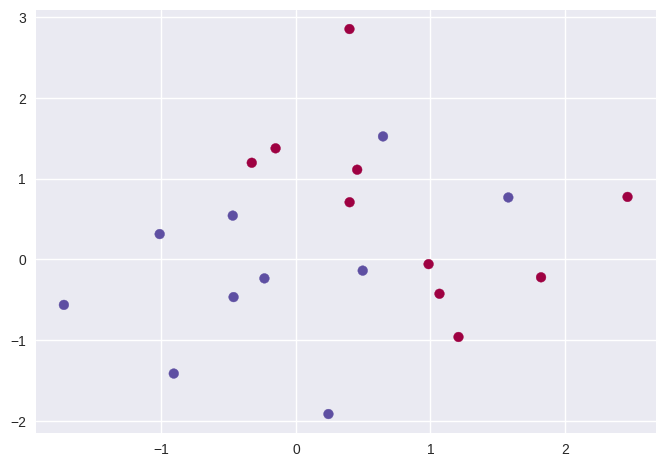
from sklearn.svm import SVC
svc = SVC(kernel='linear', C=10)
svc.fit(X, y)
SVC(C=10, kernel='linear')In a Jupyter environment, please rerun this cell to show the HTML representation or trust the notebook.
On GitHub, the HTML representation is unable to render, please try loading this page with nbviewer.org.
SVC(C=10, kernel='linear')
# using the excellent mlxtend package
from mlxtend.plotting import plot_decision_regions
plot_decision_regions(X, y, clf=svc, X_highlight=svc.support_vectors_);

# support vectors
pd.DataFrame(svc.support_vectors_, index=svc.support_)
| 0 | 1 | |
|---|---|---|
| 0 | 0.49671 | -0.13826 |
| 1 | 0.64769 | 1.52303 |
| 2 | -0.23415 | -0.23414 |
| 3 | 1.57921 | 0.76743 |
| 4 | -0.46947 | 0.54256 |
| 6 | 0.24196 | -1.91328 |
| 11 | 1.06753 | -0.42475 |
| 12 | 0.45562 | 1.11092 |
| 13 | -0.15099 | 1.37570 |
| 14 | 0.39936 | 0.70831 |
| 18 | 1.20886 | -0.95967 |
| 19 | -0.32819 | 1.19686 |
svc2 = SVC(kernel='linear', C=0.1)
svc2.fit(X, y)
plot_decision_regions(X, y, clf=svc2, X_highlight=svc2.support_vectors_);
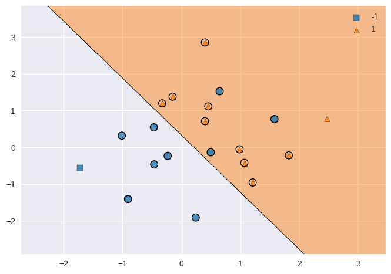
# support vectors
pd.DataFrame(svc2.support_vectors_, index=svc2.support_)
| 0 | 1 | |
|---|---|---|
| 0 | 0.49671 | -0.13826 |
| 1 | 0.64769 | 1.52303 |
| 2 | -0.23415 | -0.23414 |
| 3 | 1.57921 | 0.76743 |
| 4 | -0.46947 | 0.54256 |
| ... | ... | ... |
| 15 | 0.39829 | 2.85228 |
| 16 | 0.98650 | -0.05771 |
| 17 | 1.82254 | -0.22084 |
| 18 | 1.20886 | -0.95967 |
| 19 | -0.32819 | 1.19686 |
18 rows × 2 columns
from sklearn.model_selection import GridSearchCV
svc3 = SVC(kernel='linear')
c_space = np.array([0.001, 0.01, 0.1, 1, 5, 10, 100])
param_grid = {'C': c_space}
tune = GridSearchCV(svc3, param_grid, cv=10)
tune.fit(X, y)
tune.cv_results_
tune.best_params_
{'C': 0.001}
from sklearn.utils import resample
np.random.seed(42)
X_test = np.random.normal(size=40).reshape(20,2)
y_test = resample(np.concatenate((np.ones(10, dtype=np.int64)*-1, np.ones(10, dtype=np.int64))),
replace=True,
n_samples=20, random_state=42)
X_test[y_test == 1, :] += 1
y_pred = tune.predict(X_test)
from mlxtend.evaluate import confusion_matrix
from mlxtend.plotting import plot_confusion_matrix
plot_confusion_matrix(confusion_matrix(y_test, y_pred));

svc4 = SVC(kernel='linear', C=0.01)
svc4.fit(X_test, y_test)
y_pred4 = svc4.predict(X_test)
plot_confusion_matrix(confusion_matrix(y_test, y_pred4));
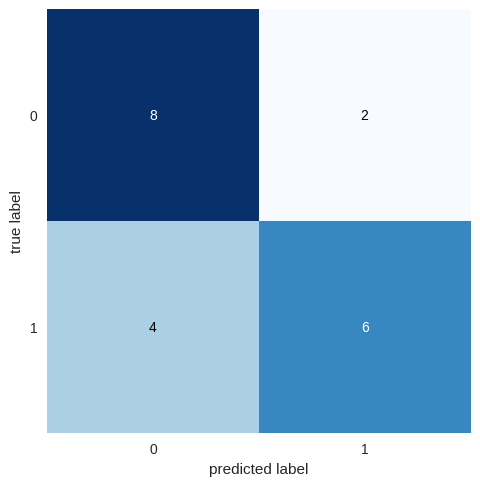
X[y == 1, :] += 1.1
plt.scatter(X[:, 0], X[:, 1], c=(y+5)/2, cmap='Spectral');

svc5 = SVC(kernel='linear', C=1e5)
svc5.fit(X, y)
plot_decision_regions(X, y, clf=svc5, X_highlight=svc5.support_vectors_);
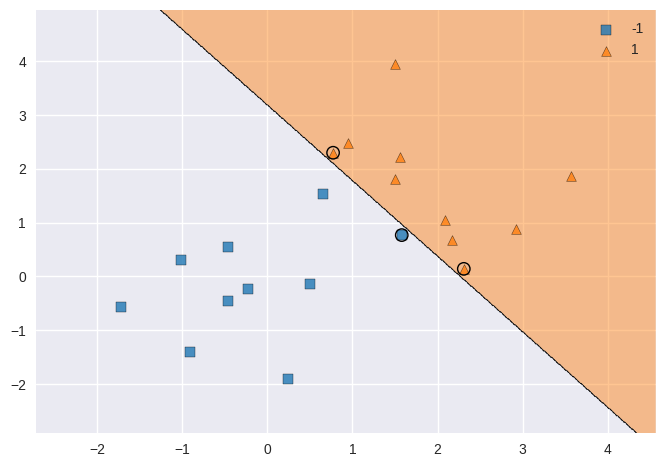
svc6 = SVC(kernel='linear', C=1)
svc6.fit(X, y)
plot_decision_regions(X, y, clf=svc6, X_highlight=svc6.support_vectors_);
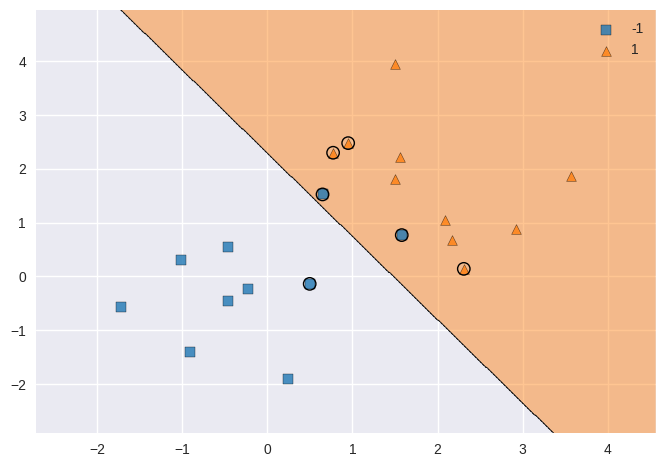
9.6.2 Support Vector Machine#
np.random.seed(42)
X = np.random.normal(size=400).reshape(200, 2)
X[0:100, :] += 2
X[100:150, :] -= 2
y = np.concatenate((np.full(150, 1, dtype=np.int64), np.full(50, 2, dtype=np.int64)))
plt.scatter(X[:, 0], X[:, 1], c=y, cmap='Spectral');
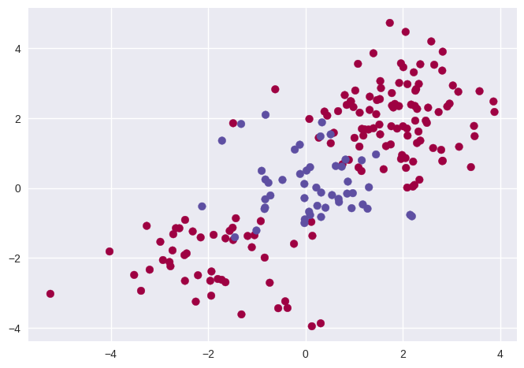
from sklearn.model_selection import train_test_split
X_train, X_test, y_train, y_test = train_test_split(X, y, train_size=0.5, test_size=0.5, random_state=42)
svm = SVC(kernel='rbf', gamma=1, C=1)
svm.fit(X_train, y_train)
plot_decision_regions(X_train, y_train, clf=svm, X_highlight=svm.support_vectors_);
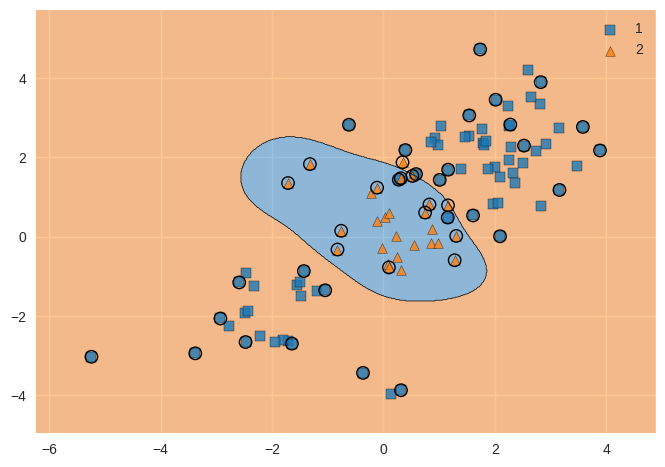
svm2 = SVC(kernel='rbf', gamma=1, C=1e5)
svm2.fit(X_train, y_train)
plot_decision_regions(X_train, y_train, clf=svm2, X_highlight=svm2.support_vectors_);
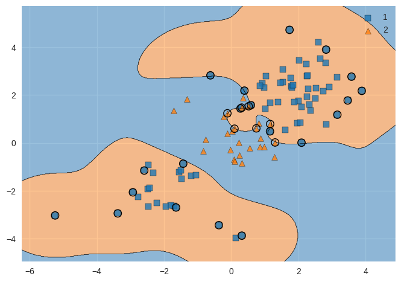
svm3 = SVC(kernel='rbf')
c_space = np.array([0.1, 1, 10, 100, 1000])
g_space = np.array([0.5, 1, 2, 3, 4])
param_grid = {'C': c_space, 'gamma': g_space}
tune = GridSearchCV(svm3, param_grid, cv=10)
tune.fit(X_train, y_train)
tune.cv_results_
tune.best_params_
{'C': 1.0, 'gamma': 0.5}
y_pred = tune.predict(X_test)
# let's try another pretty confusion matrix implementation:
import scikitplot as skplt
skplt.metrics.plot_confusion_matrix(y_test, y_pred);
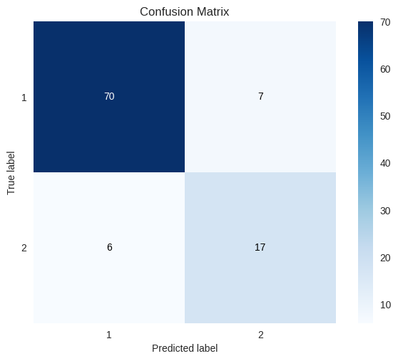
9.6.3 ROC Curves#
svm4 = SVC(kernel='rbf', gamma=2, C=1, probability=True)
svm4.fit(X_train, y_train)
svm5 = SVC(kernel='rbf', gamma=50, C=1, probability=True)
svm5.fit(X_train, y_train)
y_probas4 = svm4.predict_proba(X_train)
y_probas5 = svm5.predict_proba(X_train)
f, axes = plt.subplots(1, 2, sharex=False, sharey=False)
f.set_figheight(6)
f.set_figwidth(15)
skplt.metrics.plot_roc_curve(y_train, y_probas4, curves=['each_class'], ax=axes[0])
skplt.metrics.plot_roc_curve(y_train, y_probas5, curves=['each_class'], ax=axes[1]);
/opt/hostedtoolcache/Python/3.8.14/x64/lib/python3.8/site-packages/sklearn/utils/deprecation.py:87: FutureWarning: Function plot_roc_curve is deprecated; This will be removed in v0.5.0. Please use scikitplot.metrics.plot_roc instead.
warnings.warn(msg, category=FutureWarning)
/opt/hostedtoolcache/Python/3.8.14/x64/lib/python3.8/site-packages/sklearn/utils/deprecation.py:87: FutureWarning: Function plot_roc_curve is deprecated; This will be removed in v0.5.0. Please use scikitplot.metrics.plot_roc instead.
warnings.warn(msg, category=FutureWarning)
y_probas_test_4 = svm4.predict_proba(X_test)
y_probas_test_5 = svm5.predict_proba(X_test)
f, axes = plt.subplots(1, 2, sharex=False, sharey=False)
f.set_figheight(6)
f.set_figwidth(15)
skplt.metrics.plot_roc_curve(y_test, y_probas_test_4, curves=['each_class'], ax=axes[0])
skplt.metrics.plot_roc_curve(y_test, y_probas_test_5, curves=['each_class'], ax=axes[1]);
/opt/hostedtoolcache/Python/3.8.14/x64/lib/python3.8/site-packages/sklearn/utils/deprecation.py:87: FutureWarning: Function plot_roc_curve is deprecated; This will be removed in v0.5.0. Please use scikitplot.metrics.plot_roc instead.
warnings.warn(msg, category=FutureWarning)
/opt/hostedtoolcache/Python/3.8.14/x64/lib/python3.8/site-packages/sklearn/utils/deprecation.py:87: FutureWarning: Function plot_roc_curve is deprecated; This will be removed in v0.5.0. Please use scikitplot.metrics.plot_roc instead.
warnings.warn(msg, category=FutureWarning)
9.6.4 SVM with Multiple Classes#
np.random.seed(42)
X = np.random.normal(size=400).reshape(200, 2)
X[0:100, :] += 2
X[100:150, :] -= 2
y = np.concatenate((np.full(150, 1, dtype=np.int64), np.full(50, 2, dtype=np.int64)))
X = np.concatenate((X, np.random.normal(size=100).reshape(50, 2)))
y = np.concatenate((y, np.full(50, 0, dtype=np.int64)))
X[y == 0, 1] += 2
plt.scatter(X[:, 0], X[:, 1], c=y+1, cmap='Spectral');
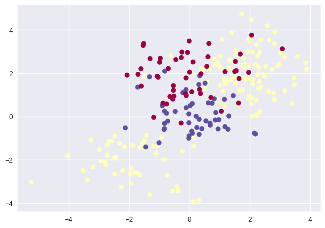
svm_m = SVC(kernel='rbf', C=10, gamma=1)
svm_m.fit(X, y)
plot_decision_regions(X, y, clf=svm_m, X_highlight=svm_m.support_vectors_);
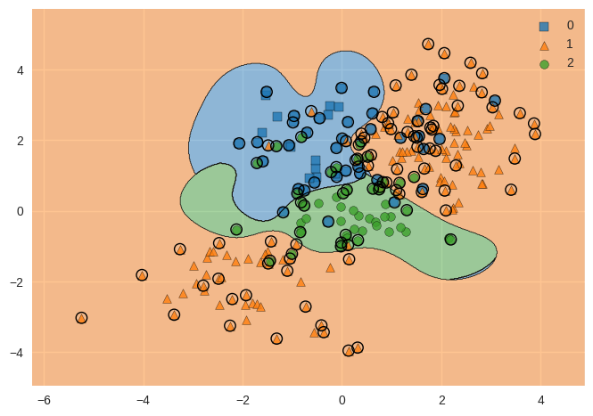
9.6.5 Application to Gene Expression Data#
khan_X_train = pd.read_csv('../datasets/Khan_xtrain.csv', index_col=0)
khan_y_train = pd.read_csv('../datasets/Khan_ytrain.csv', index_col=0)
khan_X_test = pd.read_csv('../datasets/Khan_xtest.csv', index_col=0)
khan_y_test = pd.read_csv('../datasets/Khan_ytest.csv', index_col=0)
khan_X_train.shape, khan_X_test.shape, len(khan_y_train), len(khan_y_test)
((63, 2308), (20, 2308), 63, 20)
khan_y_train.iloc[:, 0].value_counts(sort=False)
2 23
4 20
3 12
1 8
Name: x, dtype: int64
khan_y_test.iloc[:, 0].value_counts(sort=False)
3 6
2 6
4 5
1 3
Name: x, dtype: int64
out = SVC(kernel='linear', C=10)
out.fit(khan_X_train, khan_y_train.iloc[:, 0])
khan_y_train_pred = out.predict(khan_X_train)
skplt.metrics.plot_confusion_matrix(khan_y_train,
khan_y_train_pred,
title='Training Confusion Matrix');

khan_y_test_pred = out.predict(khan_X_test)
skplt.metrics.plot_confusion_matrix(khan_y_test,
khan_y_test_pred,
title='Test Confusion Matrix');
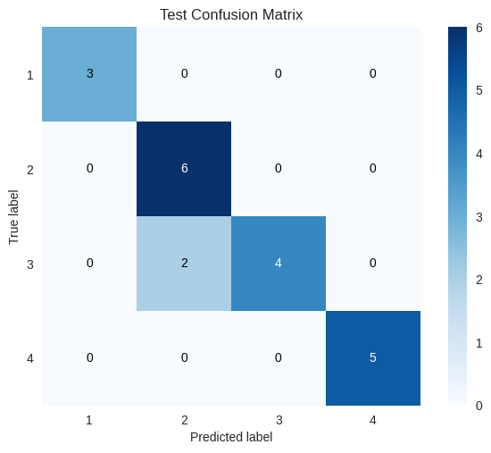